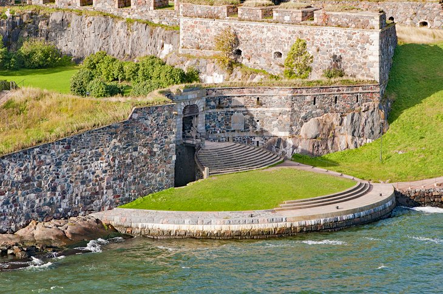
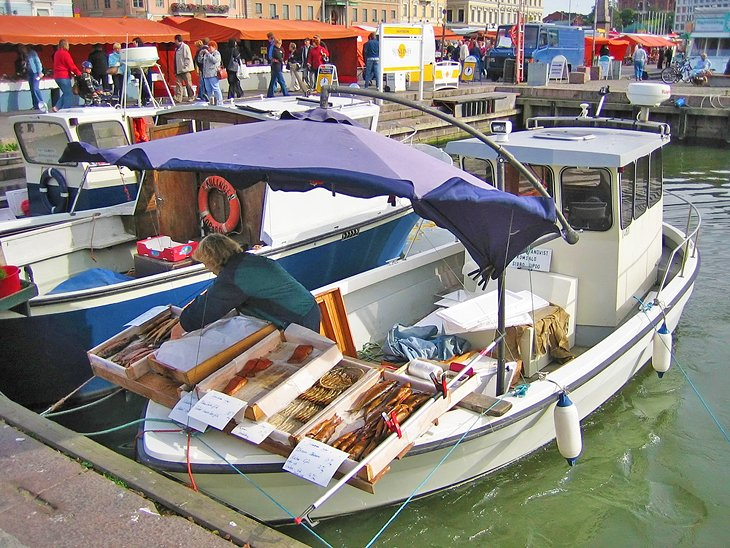
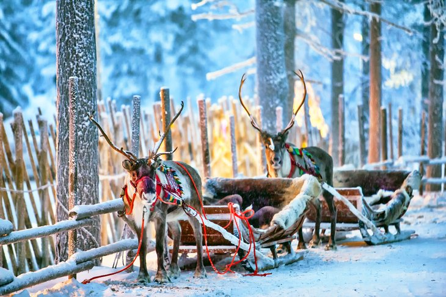

Finland might be special to you for many reasons! Maybe you love its breathtaking nature, with its endless forests, lakes, and the magical Northern Lights. Perhaps the Finnish culture, with its unique traditions, sauna rituals, and warm yet reserved people, resonates with you. Finland’s education system, safety, and high quality of life could also make it stand out. Or maybe you have personal memories—like a trip, a friendship, or a deep connection to its history or music.
You can reach Finland by flying into Helsinki-Vantaa Airport, the country’s main international gateway, with direct flights from major cities worldwide. If you're traveling from neighboring countries like Sweden, Estonia, or Germany, ferries connect Helsinki, Turku, and other coastal cities. Trains and buses also offer cross-border travel from Russia and Sweden. Once in Finland, you can explore the country using its efficient railway system, domestic flights, and well-maintained roads.